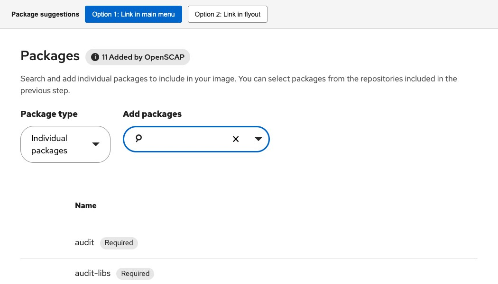
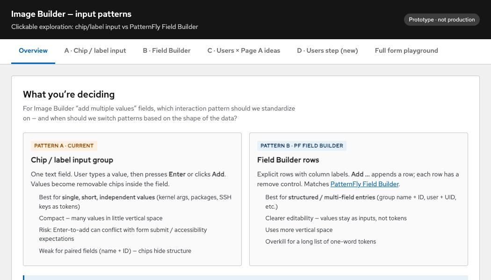
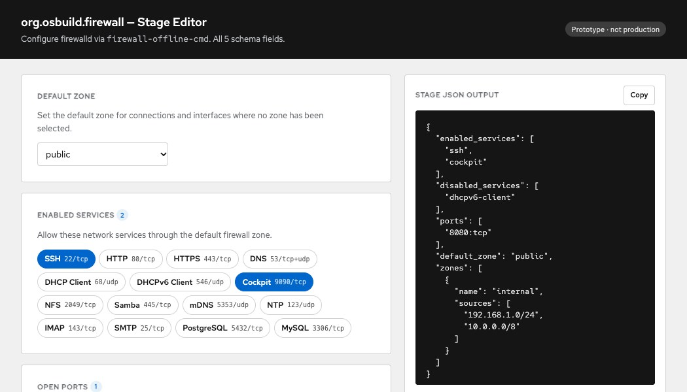
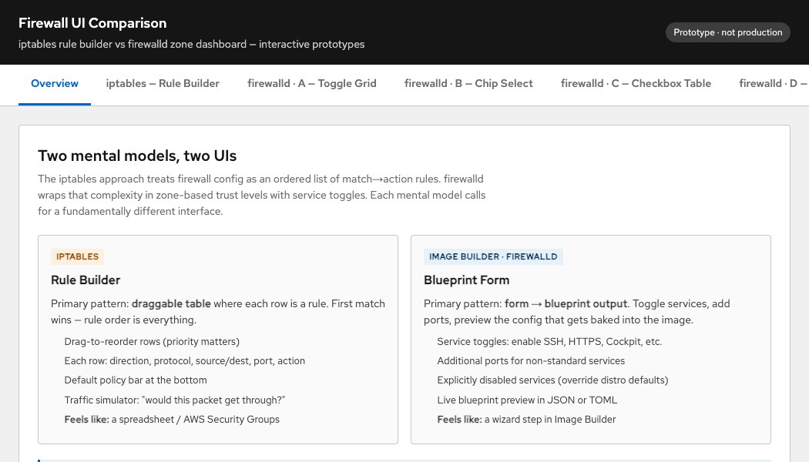
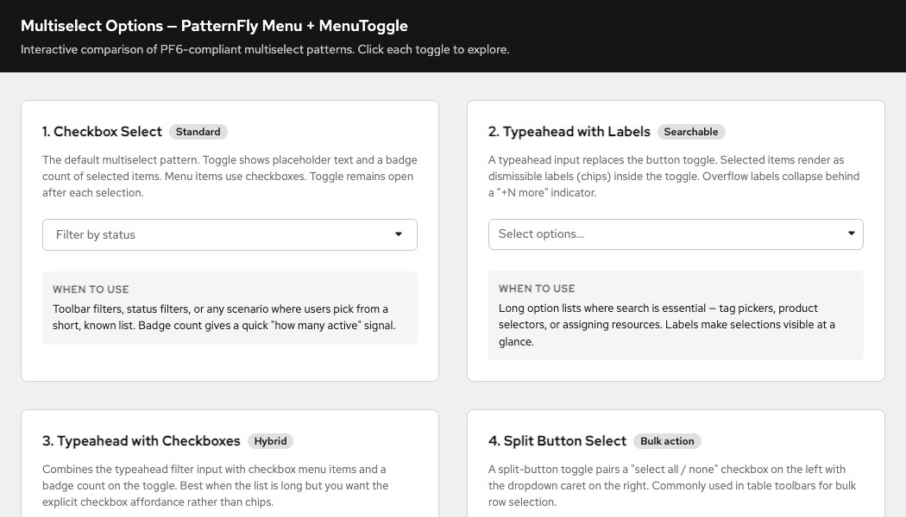
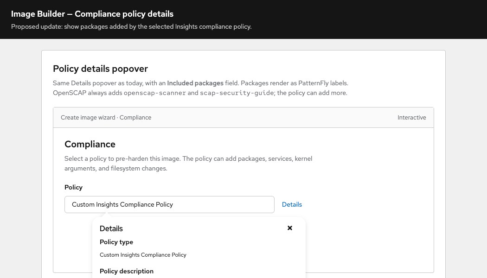

Image Builder prototype gallery
Welcome! These six interactive demos explore different parts of Image Builder. Pick one that catches your eye and try it out.

Package suggestions
Explore optional package suggestions and compare the two slightly-different options to put the documentation link & description that explains why a package was suggested.

Different input patterns
Compare ways to enter multiple values, then try them out in context when assigning groups to a user.

Firewall stage editor
Choose a default zone, add ports, and watch the org.osbuild.firewall configuration update as you go.

Firewall UI comparison
Try an iptables rule builder and explore four more ways to manage firewalld zones.

Multiselect options
Try four ways to select multiple items and see how each option can differently display what you’ve picked.

Compliance policy popover
Choose a compliance policy and view which packages it will add to your image.